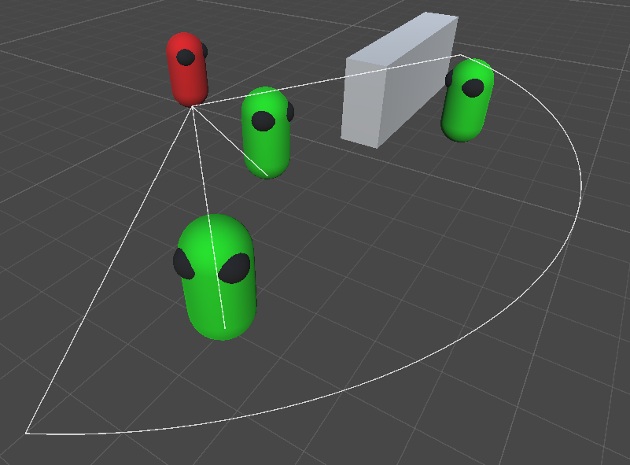
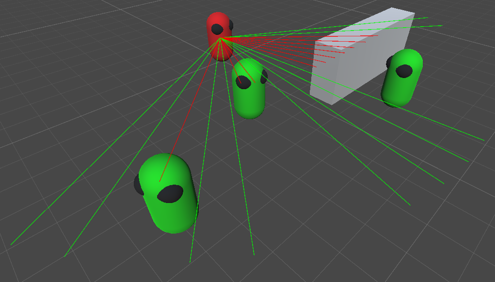

Sensors
Sensors are all extended from the KaijuSensor class implementing the Run() method. Sensors must be directly attached to or within the child GameObjects of an agent. Sensors can be run either automatically or manually executed via the Sense() method.
Vision Sensor
The KaijuVisionSensor is the base class for implementing vision detecting for a specific component type. It allows for setting a view distance, view angle, and if line-of-sight checks should be performed. If line-of-sight checks are disabled, any objects of the component type in the viewing area defined by the distance and angle will be detected. All detected items can be accessed via the Observed property.
Agents Vision Sensor
The KaijuAgentsVisionSensor is an implementation of the KaijuVisionSensor for detecting all agents. This can optionally choose to query for only specific agents based on identifiers.

Everything Vision Sensor
The KaijuEverythingVisionSensor checks for all objects in the scene. You can filter by name to get specific transforms.
Cast Sensor
The KaijuCastSensor works by casting a set number of rays for a set distance evenly spread out over a set angle. What the rays hit can be accessed via the Hits property.

Agent vision in crowds
Default agent vision shares an XZ candidate grid during each fixed sensing pass. Exact range, cone and line-of-sight checks still apply to each candidate, including Y when spatial vision is enabled. The grid captures cell membership on first use in the pass. Turn off Use Nearby Query for a sensor whose callbacks teleport other agents during that pass. Explicit target lists take precedence. Manual queries outside a sensing pass use current positions.
Use KaijuAgentsManager.FindNearby(origin, radius, list, spherical) to fill a reusable list and sensor.TryGetNearest(out var target) to select the nearest observation in the sensor's distance mode. CandidatesExamined and SightQueries describe the most recent scan. Object and position sorting overloads accepting caller buffers reuse their sort storage.